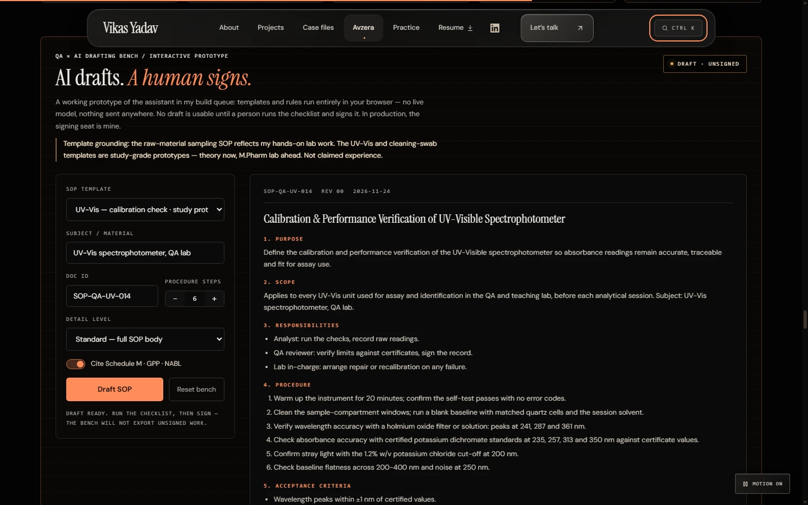
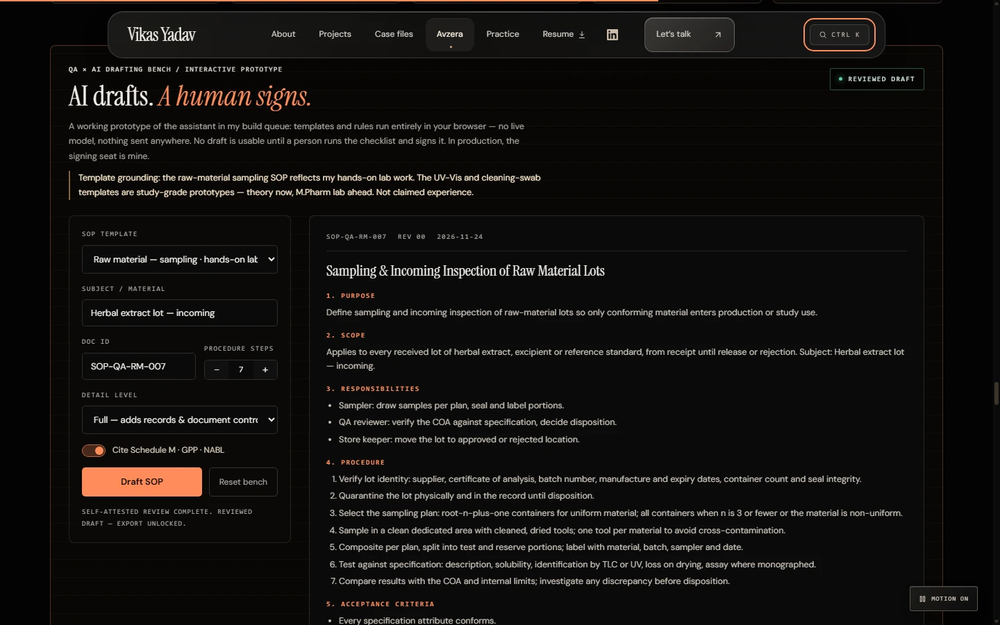
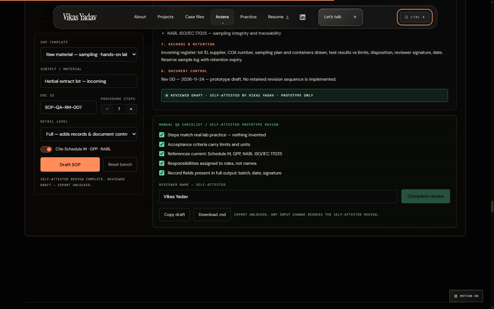
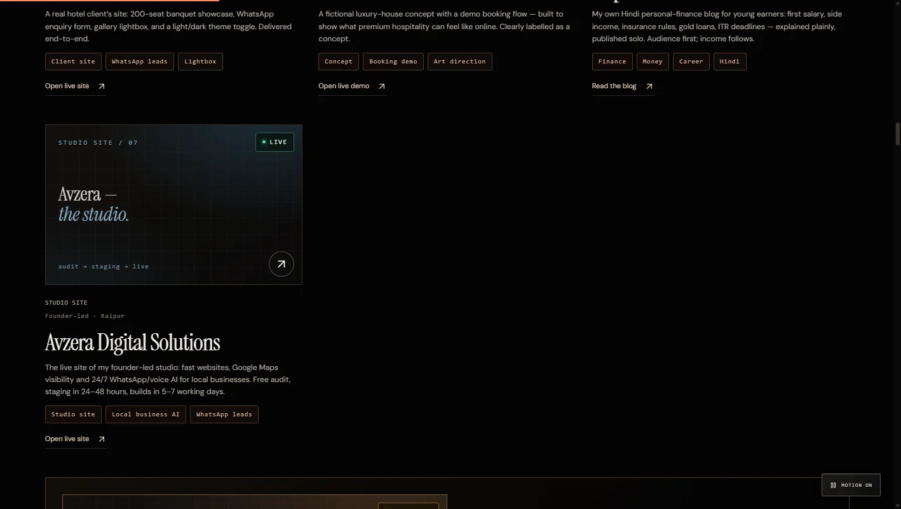
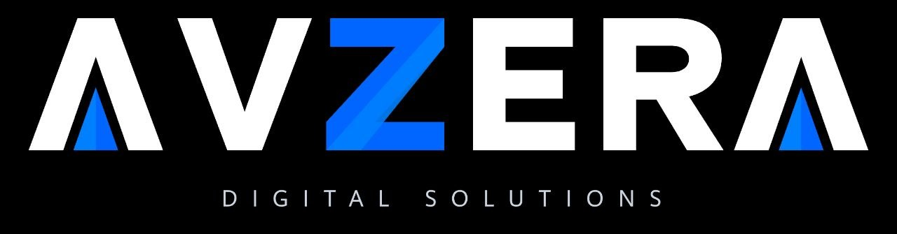

speaking coach.score: 0–10 · streak: daily LIVE
SpeakMark
An AI English-speaking coach that marks your grammar like a red pen, scores every attempt out of 10, and keeps streaks so practice becomes daily.
Open live siteM.Pharm QA candidate building careful, useful digital tools.
Pharmacy practice first. Technology with a quality mindset.
days of community-pharmacy practice at Shivam Medical
B.Pharm score, Shri Rawatpura Sarkar University
live products shipped solo — AI tools, studio & spec sites, finance blog
I connect pharmacy practice, quality assurance, AI-built products, and plain-language finance writing.
The curiosity started in Balrampur (Ramanujganj), Chhattisgarh — the kid who took things apart to see how they worked. Since 2022 that curiosity has a discipline: pharmacy, from the community-pharmacy counter to the quality-assurance lab. Now AI gives it a second language — I build the tools, test the medicines, and write about money in Hindi at Rupium.
Read my storyDoctor and chemist engagement, product presentation, and relationships built on trust — the field side of pharmacy, practiced daily.
AI products, studio & spec sites, and a finance blog —
designed, built, and shipped solo.
Nine showcased live URLs, plus one runnable prototype.
An AI English-speaking coach that marks your grammar like a red pen, scores every attempt out of 10, and keeps streaks so practice becomes daily.
Open live siteSend a photo and a voice or text question; Mira replies gently in spoken Hindi or English, with safety-first framing on every answer. Free hosting — the first load can take ~30s to wake.
Open live siteDictation wherever you type: hold Right Alt on Windows or use the Android voice keyboard, and spoken Hindi or English becomes clean text at your cursor. Free beta — sign-in and internet required, with cloud transcription.
Open live siteA self-initiated build for a real Bhilai hotel: 200-seat banquet showcase, WhatsApp inquiry form, gallery lightbox, and a light/dark theme toggle. Built on my own initiative as proof of work — not a commissioned client project.
Open live siteA fictional luxury-house concept with a demo booking flow — built to show what premium hospitality can feel like online. Clearly labeled as a concept.
Open live demoMy own Hindi personal-finance blog for young earners: first salary, side income, insurance rules, gold loans, ITR deadlines — explained plainly, published solo. Audience first; income follows.
Read the blogThe live site of my founder-led studio: fast websites, Google Maps visibility and WhatsApp/voice-AI inquiry workflows for local businesses. Free audit first; staging and build timelines are confirmed after scope.
Open live siteFree voice-to-text that types into any app on your machine: hold a key, talk, let go — filler words and stumbles are cleaned away and punctuated text lands at your cursor. Learns your names and jargon; nothing is stored after transcription.
Open live siteA premium interior-studio concept: residential, commercial and modular-kitchen services, a filterable portfolio, before/after showcase and a consultation booking flow — art-directed in warm brass and stone. Clearly labeled as a concept build.
Open live demoInteractive prototype of my SOP drafting assistant: three lab templates, detail levels, a five-point manual QA checklist and a self-attested review gate that locks download. Unsigned copies stay watermarked. Runs entirely in your browser; it is not validated QA software.
Run the benchThree build notes with the problem, process, artifacts and documented outcomes. Plans stay labeled as plans. No borrowed results, invented metrics or client claims.
A browser-based SOP drafting bench designed around one non-negotiable: no reviewed download leaves the desk without manual QA and a named self-attested reviewer.
Read the case file +AI can produce confident-looking QA text, but confidence is not verification. I wanted a working prototype that makes review, limits and sign-off visible instead of hiding them behind a generate button.



One runnable prototype, three templates, five manual checks and a working self-attested review/download gate. It demonstrates the workflow only; it is not validated software, regulatory advice or an operational QA system.
Avzera needed a public proof-of-work surface: a clear agency offer, live demonstrations and a direct path from curiosity to a project enquiry.
Read the case file +A new solo agency has no client case-study library yet. The honest starting asset is the work itself: clear services, working websites, visible craft and an enquiry path that does not pretend a spec build is a paid commission.

Five live Avzera editions and nine showcased live URLs shipped solo. The studio site, five edition links and project CTAs are published. No paying-client count, conversion lift or revenue result is claimed.
A final-year formulation project became the starting point for a longer QA question: how should a herbal extract be measured, validated and documented?
Read the case file +A finished formulation is only one part of quality. The research question behind the B.Pharm eye-gel project was how to connect a herbal formulation to a documented, testable analytical method during M.Pharm.
A completed B.Pharm final-year formulation and evaluation project, plus a defined M.Pharm research direction. Numerical evaluation results, clinical benefits and a validated analytical method are not claimed here. Method validation remains planned work.

Avzera Digital Solutions is my agency — founded 2026, run solo, built to become a company. I help a business move from limited visibility to an operational web presence: profile, website, automation. Every published build above is proof of work; self-initiated spec and concept builds are labeled. All three lines stay pitch-ready — the first yes picks the entry service. The studio site is live at avzera.vercel.app — free audit first; staging and build timelines are confirmed after scope; avzera.com follows the finished brand. The studio ships in five live editions — the canonical site plus immersive 3D and experimental builds, all linked below.
Google & directory profiles rebuilt to convert — plus a ChatGPT-ready business profile structured so AI assistants can surface accurate business details.
Fast, mobile-first sites with real inquiry flows — like the self-initiated Vivanz Palace build: WhatsApp leads, gallery, theme toggle.
Designed to reduce repetitive work: inquiry chatbots, follow-up automations, and AI agents wired into the tools a business already uses.
No borrowed praise. Client results will appear here — named, with permission — after the first paid projects. Until then, the live builds above are the proof.
Every engagement opens with a one-page scope sheet — signed before build. Two revision rounds included; extra rounds are billed, not absorbed.
One studio, five deployed builds — the canonical site plus immersive and experimental editions. Every link opens a real, live URL, and each is labeled for what it is.
From the counter people trust
to the lab records they audit.
A few things I’ve helped keep safe.
Shivam Medical, Raipur
Prescription support · patient counseling · FIFO / expiry monitoring · stock recordsPrescriptions verified, patients counseled, stock monitored. Forty-five days of Good Pharmacy Practices kept at a real counter in 2025.
A herbal-based cooling eye gel for digital eye strain relief. Formulated and evaluated for efficacy and safety.
Sampling → testing → documentation
HPLC / dissolution / FTIR in training · UV-Vis theorySampling, testing against specification, and records that stand up to audit. My M.Pharm specialization at Rungta, Bhilai.
Dispensing checked against prescription protocols, counseling on usage and dosage, inventory and expiry monitoring, and GPP standards kept throughout — recorded in spreadsheets and reports people actually read. Alongside it, my M.Pharm QA coursework adds sampling plans, specification testing, and batch documentation that survives an audit.
M.Pharm research direction: analytical method validation — proving a test measures what it claims, every time. Planned target: the herbal extract from my B.Pharm cooling eye-gel — the same lineage the future API pilot would use.
That discipline is the seed of the business plan: an asset-light QA documentation and consulting practice first, then raw-material and finished-product testing, then stability studies — and eventually a herbal-extract / phytochemical API pilot. Each stage funds the next.
First shipped QA × AI prototype: a SOP and documentation drafting bench — templates draft, I review against Schedule M, GPP and ISO/IEC 17025. The same workflow direction could support the consulting practice from 2028.
Nothing here is claimed beyond what is practiced. “Hands-on” means performed in lab; “in training” and “theory” rows are being learned during the M.Pharm program.
A working, shipped prototype: templates and rules run entirely in your browser — no live model, nothing sent anywhere. Download stays locked until a person runs the applicable checklist and signs; copied drafts stay watermarked. In production, the signing seat is mine.
Template grounding: the raw-material sampling SOP reflects my hands-on lab work. The UV-Vis and cleaning-swab templates are study-grade prototypes — theory now, M.Pharm lab ahead. Not claimed experience.
The draft lands here. Unsigned output stays watermarked and never download-ready.
Choose a discipline. Follow the thinking.
I connect what a product does with what a doctor or chemist needs to hear. Clear presentation, honest answers, and relationships that outlast a single visit — the field side of pharmacy, done with patience.
Background & full capabilitiesDispensing accuracy, prescription handling, and patient counseling under Good Pharmacy Practices. If a patient can’t repeat the dosage back to me, I haven’t counseled them yet.
See the practiceStock sheets, expiry trackers, and reports that make sense at a glance — plus the QA habit of writing everything down as if an auditor will read it tomorrow. Because one day, one will. On the digital side: strong Excel and MS Office, deep AI-assisted research, and automation that removes the repetitive work.
See the impactI use AI the way a lab uses instruments: deliberately, with checks. AI agents, automation pipelines, deep research, and full web products — nine showcased live URLs so far, from an English-speaking coach and voice-to-text tools to a self-initiated hotel site, my own studio site (the canonical of five Avzera editions) and my Hindi finance blog. I know where AI helps, where it hallucinates, and how to verify the difference. Daily stack: ChatGPT, Gemini, Claude, Claude Code, Cursor, Antigravity and Qoder for building; Notion and Excel for the operational side.
See the live productsEvery prescription, test, and record
is a chance to keep someone safe.
Prescriptions verified, patients counseled, stock monitored.
GPP standards kept throughout.
Shri Rawatpura Sarkar University, Raipur — class of 2026.
B.Pharm completed; M.Pharm (Quality Assurance) in progress at Sanjay Rungta Group of Institutions, Bhilai.
Dispense with care.
Test with precision.
Document everything.
Since 2022 I’ve trained as a pharmacist — from B.Pharm at Shri Rawatpura Sarkar University, Raipur, through a community-pharmacy internship, into M.Pharm Quality Assurance at Rungta, Bhilai. Studying the science. Practicing the counter. Keeping the records.
My part in the storyThe first white coat. Admitted to B.Pharm at Shri Rawatpura Sarkar University, Raipur.
A counter. Completed 45 days of medical internship at Shivam Medical, Raipur.
A degree. And a builder. B.Pharm completed with 68.18%; admitted to M.Pharm QA and founded Avzera Digital Solutions.
Specializing. And building. M.Pharm in Pharmaceutical Quality Assurance at Rungta, Bhilai — while running Avzera and shipping AI products.
The lab and the company. Planned: complete M.Pharm and, if the studio sustains demand, grow Avzera beyond solo practice. Next: a quality testing lab, then a herbal-extract API pilot.
Every honest conversation with a doctor or chemist quietly removes doubt for someone — a patient, a pharmacist, a family. That is the ripple I work for.
From Balrampur (Ramanujganj) — a short timeline of a long curiosity.
No capital. No placement plan. No team — yet. What there is: a 5 a.m. alarm, six hours of daily build time around minimum college attendance, and a discipline of testing everything — medicines, methods, and my own assumptions. The business is the career.
Balrampur (Ramanujganj), Chhattisgarh. No family push toward pharmacy — just a childhood spent inside the tech world, taking things apart to see how they worked.
Admitted to B.Pharm at Shri Rawatpura Sarkar University, Raipur — pharmacology, pharmaceutics, and the discipline of exact doses.
Completed 45 days as a medical intern at Shivam Medical, Raipur — prescription support, counseling, FIFO and stock records under Good Pharmacy Practices.
B.Pharm completed with 68.18%; admitted to M.Pharm (Pharmaceutical Quality Assurance) at Sanjay Rungta Group of Institutions, Bhilai — and founded Avzera Digital Solutions the same year.
Planned direction: complete M.Pharm analytical-method validation research and, if the studio sustains demand, convert Avzera from solo practice to a company with hires and automation.
Long-term plan: a quality testing lab — raw material, finished product, stability — followed by a herbal-extract / phytochemical API pilot. These are future goals, not completed capabilities.
Patient counseling, doctor & chemist engagement, and product presentation — practiced during my internship and at campus and community events across Chhattisgarh. Clear language, honest answers, and follow-through.
Choose the context that fits. Your message opens with the right subject, so we can skip the small talk and get to the work.
M.Pharm QA opportunities, pharmacy practice, analytical-method research, documentation collaboration or a future lab / herbal-extract partnership.
Business-profile optimization, a fast website, inquiry automation or a chatbot for a local business. Start with the problem, not a predetermined package.
Helpful context: for opportunities, include role type, location or remote preference, start date and your preferred response window. For Avzera, include the business, bottleneck, desired outcome and rough timeline. Response timing is confirmed in reply. Direct fallback: vikasyadav.hq@gmail.com · +91 74893 10821.
Research collaboration, a long-term lab / API conversation, an event invitation or an investment discussion.